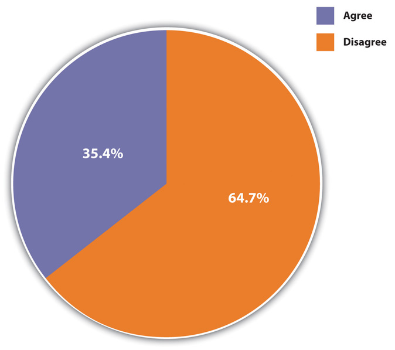
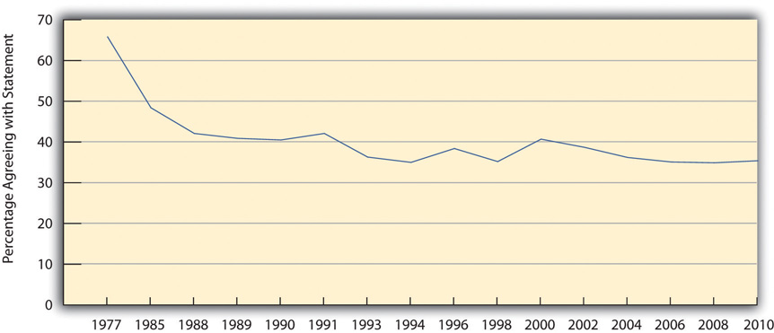
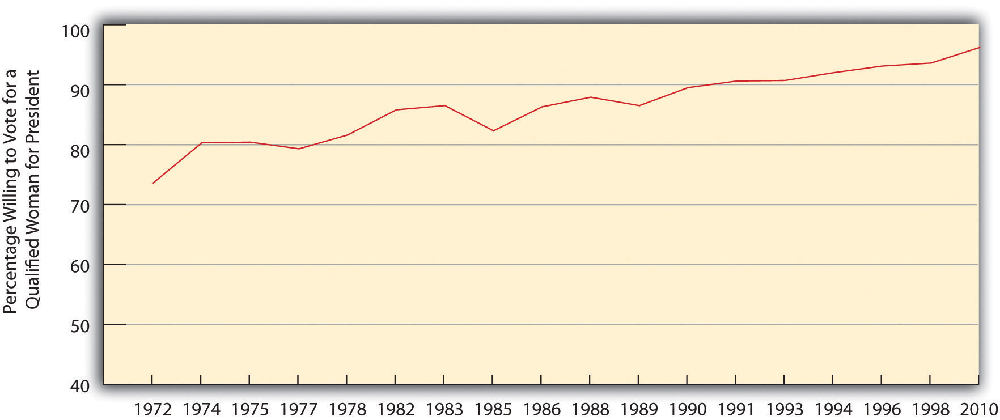
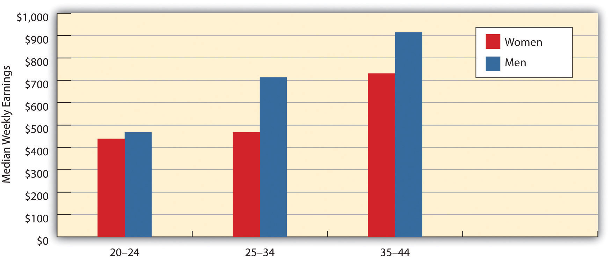

“$3.2M Awarded in Harassment Suit against Ex-Judge,” the headline said. A federal jury in Houston, Texas, awarded $3.2 million to three women, all county employees, who had accused a former judge of sexual harassment. Their suit said the judge had “hugged, groped, kissed and fondled them and had emailed them sexually explicit photographs,” according to a news report, and that county officials had ignored the judge’s behavior despite their knowledge of it. The judge had resigned his position three years earlier after pleading no contest to several charges of misdemeanor assault related to his physical contact with several women. His only criminal penalty was to pay a fine of less than $3,000.
After the verdict was announced, the plaintiffs’ attorney said, “I am very proud of this verdict, and hope it sends a message to all public officials that they are not above the law and should think twice before abusing power.” One of the plaintiffs recalled what it was like to have been harassed by the judge: “I felt alone, I felt small, I felt like he was the most powerful man in Brazoria County. I felt like there was nothing I could do. I felt scared.” At the same time, she was encouraged by the jury’s verdict and the fact that other women had come forward to speak out about the judge’s behavior: “You don’t have to go through it alone. You can stand up for yourself.”
Sources: Cisneros, 2011; Tolson, 2011Cisneros, C. (2011, July 15). $3.2M settlement awarded in sexual harassment case. KTRK-TV. Retrieved from http://abclocal.go.com/ktrk/story?section=news/local&id=8253455; Tolson, M. (2011, July 15). $3.2M awarded in harassment suit against ex-judge. Houston Chronicle. Retrieved from http://www.chron.com/disp/story.mpl/metropolitan/7655717.html.
Thanks to the contemporary women’s rights movement that began in the late 1960s, much has changed for women and men in American society during the past half-century. Still, as this news story about sexual harassment reminds us, much more still needs to be done. Despite tremendous advancements for women since the 1960s, gender inequality persists and manifests itself in many ways. This chapter examines the major forms of gender inequality and the reasons for its existence, and it outlines various steps our society should take to help ensure equality between the sexes. Our discussion begins with a critical look at the concepts of sex and gender.
Although the terms sex and gender are sometimes used interchangeably and do complement each other, they nonetheless refer to different aspects of what it means to be a woman or man in any society.
SexThe anatomical and other biological differences between females and males that are determined at the moment of conception and develop in the womb and throughout childhood and adolescence. refers to the anatomical and other biological differences between females and males that are determined at the moment of conception and develop in the womb and throughout childhood and adolescence. Females, of course, have two X chromosomes, while males have one X chromosome and one Y chromosome. From this basic genetic difference spring other biological differences. The first to appear are the genitals that boys and girls develop in the womb and that the doctor (or midwife) and parents look for when a baby is born (assuming the baby’s sex is not already known from ultrasound or other techniques) so that the momentous announcement, “It’s a boy!” or “It’s a girl!” can be made. The genitalia are called primary sex characteristicsAnatomical and other biological differences between females and males that begin developing in the womb., while the other differences that develop during puberty are called secondary sex characteristicsBiological differences between females and males that emerge during puberty. and stem from hormonal differences between the two sexes. Boys generally acquire deeper voices, more body hair, and more muscles from their flowing testosterone. Girls develop breasts and wider hips and begin menstruating as nature prepares them for possible pregnancy and childbirth. For better or worse, these basic biological differences between the sexes affect many people’s perceptions of what it means to be female or male, as we next discuss.
If sex is a biological concept, then genderThe social and cultural differences a society assigns to people based on their biological sex. is a social concept. It refers to the social and cultural differences a society assigns to people based on their (biological) sex. A related concept, gender rolesA society’s expectations of people’s behavior and attitudes based on whether they are females or males., refers to a society’s expectations of people’s behavior and attitudes based on whether they are females or males. Understood in this way, gender, like race as discussed in Chapter 3 "Racial and Ethnic Inequality", is a social construction. How we think and behave as females and males is not etched in stone by our biology but rather is a result of how society expects us to think and behave based on what sex we are. As we grow up, we learn these expectations as we develop our gender identityIndividuals’ beliefs about themselves as either females or males., or our beliefs about ourselves as females or males.
These expectations are called femininity and masculinity. FemininityCultural expectations of girls and women, including gentleness and attractiveness. refers to the cultural expectations we have of girls and women, while masculinityCultural expectations of boys and men, including toughness and bravery. refers to the expectations we have of boys and men. A familiar nursery rhyme nicely summarizes these two sets of traits:
| What are little boys made of? |
| Snips and snails, |
| And puppy dog tails, |
| That’s what little boys are made of. |
| What are little girls made of? |
| Sugar and spice, |
| And everything nice, |
| That’s what little girls are made of. |
As this rhyme suggests, our traditional notions of femininity and masculinity indicate that we think females and males are fundamentally different from each other. In effect, we think of them as two sides of the same coin of being human. What we traditionally mean by femininity is captured in the adjectives, both positive and negative, we traditionally ascribe to women: gentle, sensitive, nurturing, delicate, graceful, cooperative, decorative, dependent, emotional, passive, and weak. Thus when we say that a girl or woman is very feminine, we have some combination of these traits in mind: she is soft, dainty, pretty, and even a bit flighty. What we traditionally mean by masculinity is captured in the adjectives, again both positive and negative, our society traditionally ascribes to men: strong, assertive, brave, active, independent, intelligent, competitive, insensitive, unemotional, and aggressive. When we say that a boy or man is very masculine, we have some combination of these traits in mind: he is tough, strong, and assertive.
These traits might sound like stereotypes of females and males in today’s society, and to some extent they are, but differences between women and men in attitudes and behavior do in fact exist (Aulette & Wittner, 2011).Aulette, J. R., & Wittner, J. (2011). Gendered worlds (2nd ed.). New York, NY: Oxford University Press. For example, women cry more often than men do. Men are more physically violent than women. Women take care of children more than men do. Women smile more often than men. Men curse and spit more often than women. When women talk with each other, they are more likely to talk about their personal lives than men are when they talk with each other. The two sexes even differ when they hold a cigarette (not that anyone should smoke!). When a woman holds a cigarette, she usually has the palm of her cigarette-holding hand facing upward; when a man holds a cigarette, he usually has his palm facing downward.
What accounts for differences in female and male behavior and attitudes? Do the biological differences between the sexes account for these other differences? Or do these latter differences stem, as most sociologists think, from cultural expectations and from differences in the ways in which the sexes are socialized? These are critical questions, for they ask whether the differences between boys and girls and women and men stem more from biology or from society. If we think behavioral and other differences between the sexes are due primarily to their respective biological makeups, we imply that these differences are inevitable or nearly so and that any attempt to change them goes against biology and will likely fail.
For example, consider the obvious biological fact that women bear and nurse children and men do not. Couple this with the common view that women are also more gentle and nurturing than men, and we end up with a “biological recipe” for women to be the primary caretakers of children. Many people think this means women are therefore much better suited than men to take care of children once they are born, and that the family might be harmed if mothers work outside the home or if fathers are the primary caretakers. Figure 4.1 "Belief That Women Should Stay at Home" shows that more than one-third of the public agrees that “it is much better for everyone involved if the man is the achiever outside the home and the woman takes care of the home and family.” To the extent this belief exists, women may not want to work outside the home or, if they choose to do so, they then face difficulties from employers, family, and friends. Conversely, men may not even think about wanting to stay at home and may themselves face difficulties from employees, family, and friends if they want to do so. A belief in a strong biological basis for differences between women and men implies, then, that there is little we can or should do to change these differences. It implies that “anatomy is destiny,” and destiny is, of course, by definition inevitable.
Figure 4.1 Belief That Women Should Stay at Home
Agreement or disagreement with the statement that “it is much better for everyone involved if the man is the achiever outside the home and the woman takes care of the home and family.”
Source: Data from General Social Survey. (2010). Retrieved from http://sda.berkeley.edu/cgi-bin/hsda?harcsda+gss10.
This implication makes it essential to understand the extent to which gender differences do, in fact, stem from biological differences between the sexes or, instead, stem from cultural and social influences. If biology is paramount, then gender differences are perhaps inevitable and the status quo will remain. If culture and social influences matter much more than biology, then gender differences can change and the status quo may give way. With this backdrop in mind, let’s turn to the biological evidence for behavioral and other differences between the sexes and then examine the evidence for their social and cultural roots.
Several biological explanations for gender roles exist, and we discuss two of the most important ones here. One explanation is from the field of evolutionary psychology (Buss, 2012)Buss, D. (2012). Evolutionary psychology: The new science of the mind (4th ed.). Upper Saddle River, NJ: Pearson. and argues an evolutionary basis for traditional gender roles.
Scholars advocating this view reason as follows (Thornhill & Gangestad, 2008).Thornhill, R., & Gangestad, S. W. (2008). The evolutionary biology of human female sexuality. New York, NY: Oxford University Press. In prehistoric societies, two major social roles existed (1) hunting or gathering food to relieve hunger, and (2) bearing and nursing children. Because only women could perform the latter role, they were also the primary caretakers for children for several years after birth. And because women were frequently pregnant, their roles as mothers confined them to the home. Meanwhile, men were better suited than women for hunting because they were stronger and quicker than women. In prehistoric societies, then, biology was indeed destiny: For biological reasons, men in effect worked outside the home (hunted), while women stayed at home with their children.
Evolutionary reasons also explain why men are more violent than women. In prehistoric times, men who were more willing to commit violence against and even kill other men would “win out” in the competition for female mates. They thus were more likely than less violent men to produce offspring, who would then carry these males’ genetic violent tendencies.
If the human race evolved along these lines, evolutionary psychologists continue, natural selection favored those societies where men were stronger, braver, and more aggressive and where women were more fertile and nurturing. Such traits over the millennia became fairly instinctual, meaning that men’s and women’s biological natures evolved differently. Men became, by nature, more assertive, daring, and violent than women, and women became, by nature, more gentle, nurturing, and maternal than men. To the extent this is true, these scholars add, traditional gender roles for women and men make sense from an evolutionary standpoint, and attempts to change them go against the sexes’ biological natures. This in turn implies that existing gender inequality must continue because it is rooted in biology. The title of a book presenting the evolutionary psychology argument summarizes this implication: “Biology at Work: Rethinking Sexual Equality” (Browne, 2002).Browne, K. (2002). Biology at work: Rethinking sexual equality. New Brunswick, NJ: Rutgers University Press.
Critics challenge the evolutionary explanation on several grounds (Begley, 2009; Fine, 2011).Begley, S. (2009, June 29). Don’t blame the caveman. Newsweek, 52–62; Fine, C. (2011). Delusions of gender: The real science behind sex differences. New York, NY: W. W. Norton. First, much greater gender variation in behavior and attitudes existed in prehistoric times than the evolutionary explanation assumes. Second, even if biological differences did influence gender roles in prehistoric times, these differences are largely irrelevant in modern societies, in which, for example, physical strength is not necessary for survival. Third, human environments throughout the millennia have simply been too diverse to permit the simple, straightforward biological development that the evolutionary explanation assumes. Fourth, evolutionary arguments implicitly justify existing gender inequality by implying the need to confine women and men to their traditional roles.
Recent anthropological evidence also challenges the evolutionary argument that men’s tendency to commit violence was biologically transmitted. This evidence instead finds that violent men have trouble finding female mates who would want them and that the female mates they find and the children they produce are often killed by rivals to the men (Begley, 2009).Begley, S. (2009, June 29). Don’t blame the caveman. Newsweek, 52–62.
A second biological explanation for traditional gender roles attributes males’ higher levels of aggression to their higher levels of testosterone (Mazur, 2009).Mazur, A. (2009). Testosterone and violence among young men. In A. Walsh & K. M. Beaver (Eds.), Biosocial criminology: New directions in theory and research (pp. 190–204). New York, NY: Routledge. Several studies find that males with higher levels of testosterone tend to have higher levels of aggression. However, this correlation does not necessarily mean that their testosterone increased their violence; as has been found in various animal species, it is also possible that their violence increased their testosterone. Because studies of human males cannot for ethical and practical reasons manipulate their testosterone levels, the exact meaning of the results from these testosterone-aggression studies must remain unclear, according to a report by the National Academy of Sciences (Miczek, Mirsky, Carey, DeBold, & Raine, 1994).Miczek, K. A., Mirsky, A. F., Carey, G., DeBold, J., & Raine, A. (1994). An overview of biological influences on violent behavior. In J. Albert, J. Reiss, K. A. Miczek & J. A. Roth (Eds.), Understanding and preventing violence: Biobehavioral influences (Vol. 2, pp. 1–20). Washington, DC: National Academy Press.
Another line of research on the biological basis for sex differences in aggression involves children, including some as young as ages 1 or 2, in various situations (Card, Stucky, Sawalani, & Little, 2008).Card, N. A., Stucky, B. D., Sawalani, G. M., & Little, T. D. (2008). Direct and indirect aggression during childhood and adolescence: A meta-analytic review of gender differences, intercorrelations, and relations to maladjustment. Child Development, 79(5), 1185–1229. They might be playing with each other, interacting with adults, or writing down solutions to hypothetical scenarios given to them by a researcher. In most of these studies, boys are more physically aggressive in thought or deed than girls, even at a very young age. Other studies are more experimental in nature. In one type of study, a toddler will be playing with a toy, only to have it removed by an adult. Boys typically tend to look angry and try to grab the toy back, while girls tend to just sit there and whimper. Because these gender differences in aggression are found at very young ages, researchers often say they must have some biological basis. However, critics of this line of research counter that even young children have already been socialized along gender lines (Begley, 2009; Fine, 2011),Begley, S. (2009, September 14). Pink brain, blue brain: Claims of sex differences fall apart. Newsweek, 28; Fine, C. (2011). Delusions of gender: The real science behind sex differences. New York, NY: W. W. Norton. a point to which we return later in the chapter. To the extent this is true, gender differences in children’s aggression may reflect socialization rather than biology.
In sum, biological evidence for gender differences certainly exists, but its interpretation remains very controversial. It must be weighed against the evidence, to which we next turn, of cultural variations in the experience of gender and of socialization differences by gender. One thing is clear: To the extent we accept biological explanations for gender, we imply that existing gender differences and gender inequality must continue to exist. As sociologist Linda L. Lindsey (2011, p. 52)Lindsey, L. L. (2011). Gender roles: A sociological perspective (5th ed.). Upper Saddle River, NJ: Prentice Hall. notes, “Biological arguments are consistently drawn upon to justify gender inequality and the continued oppression of women.” In contrast, cultural and social explanations of gender differences and gender inequality promise some hope for change. Let’s examine the evidence for these explanations.
Some of the most compelling evidence against a strong biological determination of gender roles comes from anthropologists, whose work on preindustrial societies demonstrates some striking gender variation from one culture to another. This variation underscores the impact of culture on how females and males think and behave.
Extensive evidence of this impact comes from anthropologist George Murdock (1937),Murdock, G. (1937). Comparative data on the division of labor by sex. Social Forces, 15, 551–553. who created the Standard Cross-Cultural Sample of almost two hundred preindustrial societies studied by anthropologists. Murdock found that some tasks in these societies, such as hunting and trapping, are almost always done by men, while other tasks, such as cooking and fetching water, are almost always done by women. These patterns provide evidence for the evolutionary argument presented earlier, as they probably stem from the biological differences between the sexes. Even so, there were at least some societies in which women hunted and in which men cooked and fetched water.
More important, Murdock found much greater gender variation in several of the other tasks he studied, including planting crops, milking, and generating fires. Men primarily performed these tasks in some societies, women primarily performed them in other societies, and in still other societies both sexes performed them equally. Murdock’s findings illustrate how gender roles differ from one culture to another and imply they are not biologically determined.
Anthropologists continue to investigate cultural differences in gender. Some of their most interesting findings concern gender and sexuality (Brettell & Sargent, 2009).Brettell, C. B., & Sargent, C. F. (Eds.). (2009). Gender in cross-cultural perspective (5th ed.). Upper Saddle River, NJ: Prentice Hall. Although all societies distinguish “femaleness” and “maleness,” additional gender categories exist in some societies. The Native Americans known as the Mohave, for example, recognize four genders: a woman, a woman who acts like a man, a man, and a man who acts like a woman. In some societies, a third, intermediary gender category is recognized. Anthropologists call this category the berdache, who is usually a man who takes on a woman’s role. This intermediary category combines aspects of both femininity and masculinity of the society in which it is found and is thus considered an androgynousContaining aspects of both femaleness and maleness, or of both femininity and masculinity. gender. Although some people in this category are born as intersexed individuals (formerly known as hermaphrodites), meaning they have genitalia of both sexes, many are born biologically as one sex or the other but adopt an androgynous identity.
Anthropologists have found another androgynous gender composed of women warriors in thirty-three Native American groups in North America. Walter L. Williams (1997)Williams, W. L. (1997). Amazons of America: Female gender variance. In C. B. Brettell & C. F. Sargent (Eds.), Gender in cross-cultural perspective (2nd ed., pp. 202–213). Upper Saddle River, NJ: Prentice Hall. calls these women “amazons” and notes that they dress like men and sometimes even marry women. In some tribes girls exhibit such “masculine” characteristics from childhood, while in others they may be recruited into “amazonhood.” In the Kaska Indians, for example, a married couple with too many daughters would select one to “be like a man.” When she was about 5 years of age, her parents would begin to dress her like a boy and have her do male tasks. Eventually she would grow up to become a hunter.
The androgynous genders found by anthropologists remind us that gender is a social construction and not just a biological fact. If culture does affect gender roles, socialization is the process through which culture has this effect. What we experience as girls and boys strongly influences how we develop as women and men in terms of behavior and attitudes. To illustrate this important dimension of gender, let’s turn to the evidence on socialization.
SocializationThe process whereby individuals learn the culture of their society. is the process whereby individuals learn the culture of their society. Several agents of socialization exist, including the family, peers, schools, the mass media, and religion, and all these institutions help to socialize people into their gender roles and also help them develop their gender identity (Andersen & Hysock, 2011).Andersen, M., & Hysock, D. (2011). Thinking about women: Sociological perspectives on sex and gender (9th ed.). Boston, MA: Allyn & Bacon.
Socialization into gender roles begins in infancy, as almost from the moment of birth parents begin to socialize their children as boys or girls without even knowing it (Begley, 2009; Eliot, 2011).Begley, S. (2009, September 14). Pink brain, blue brain: Claims of sex differences fall apart. Newsweek, 28; Eliot, L. (2011). Pink brain, blue brain: How small differences grow into troublesome gaps—and what we can do about it. London, United Kingdom: Oneworld Publications. Parents commonly describe their infant daughters as pretty, soft, and delicate and their infant sons as strong, active, and alert, even though neutral observers find no such gender differences among infants when they do not know the infants’ sex. From infancy on, parents play with and otherwise interact with their daughters and sons differently. They play more roughly with their sons—for example, by throwing them up in the air or by gently wrestling with them—and more quietly with their daughters. When their infant or toddler daughters cry, they warmly comfort them, but they tend to let their sons cry longer and to comfort them less. They give their girls dolls to play with and their boys action figures and toy guns. While these gender differences in socialization are probably smaller now than a generation ago, they certainly continue to exist. Go into a large toy store and you will see pink aisles of dolls and cooking sets and blue aisles of action figures, toy guns, and related items.
Peer influences also encourage gender socialization. As they reach school age, children begin to play different games based on their gender. Boys tend to play sports and other competitive team games governed by inflexible rules and relatively large numbers of roles, while girls tend to play smaller, cooperative games such as hopscotch and jumping rope with fewer and more flexible rules. Although girls are much more involved in sports now than a generation ago, these gender differences in their play persist and continue to reinforce gender roles. For example, boys’ games encourage them to be competitive, while girls’ games encourage them to become cooperative and trusting. The patterns we see in adult males and females thus have roots in their play as young children (Lindsey, 2011)Lindsey, L. L. (2011). Gender roles: A sociological perspective (5th ed.). Upper Saddle River, NJ: Prentice Hall. (see Note 4.13 "Children and Our Future").
Girls and Boys at Play
The text discusses how the types of games that girls and boys play influence their gender-role socialization. Let’s take a closer look at two early sociological studies that provided important evidence for this process.
Janet Lever (1978)Lever, J. (1978). Sex differences in the complexity of children’s play and games. American Sociological Review, 43, 471–483. studied fifth-grade children in three different communities in Connecticut. She watched them play and otherwise interact in school and also had the children keep diaries of their play and games outside school. Lever found that boys’ games were typically more complex than girls’ games: The boys’ games had a greater number of rules and more specialized roles, and they also involved more individuals playing. She attributed these differences to socialization by parents, teachers, and other adults and argued that the complexity of boys’ play and games helped them to be better able than girls to learn important social skills such as dealing with rules and coordinating actions to achieve goals.
A second sociologist, Barrie Thorne (1993),Thorne, B. (1993). Gender play: Girls and boys in school. New Brunswick, NJ: Rutgers University Press. studied fourth- and fifth-graders in California and Michigan. The boys tended to play team sports and other competitive games, while the girls tended to play cooperative games such as jump rope. These differences led Thorne to conclude that gender-role socialization stems not only from practices by adults but also from the children’s own activities without adult involvement. When boys and girls interacted, it was often “girls against the boys” in classroom spelling contests and in games such as tag. Thorne concluded that these “us against them” contests helped the children learn that boys and girls are two different and antagonistic sexes. Boys also tended to disrupt girls’ games more than the reverse and in this manner both exerted and learned dominance over females. In all these ways, children were not just the passive recipients of gender-role socialization from adults (their teachers), but they also played an active role in ensuring that such socialization occurred.
These two studies were among the first to emphasize the importance of children’s play for the gender-based traits and values that girls and boys learn, which in turn affect the choices they make for careers and other matters later in life. The rise in team sports opportunities for girls in the years since Lever and Thorne did their research is a welcome development, but young children continue to play in the ways that Lever and Thorne found. The body of research on gender differences in children’s play points to the need for teachers, parents, and other adults to encourage girls and boys alike to have a mixture of both competitive and cooperative games so that both sexes may develop a better balance of values that are now commonly considered to be either feminine or masculine.
School is yet another agent of gender socialization. First of all, school playgrounds provide a location for the gender-linked play activities just described to occur. Second, and perhaps more important, teachers at all levels treat their female and male students differently in subtle ways of which they are probably not aware. They tend to call on boys more often to answer questions in class and to praise them more when they give the right answer. They also give boys more feedback about their assignments and other school work (Sadker & Sadker, 1994).Sadker, M., & Sadker, D. (1994). Failing at fairness: How America’s schools cheat girls. New York, NY: Charles Scribner’s. At all grade levels, many textbooks and other books still portray people in gender-stereotyped ways. It is true that the newer books do less of this than older ones, but the newer books still contain some stereotypes, and the older books are still used in many schools, especially those that cannot afford to buy newer volumes.
Gender socialization also occurs through the mass media (Renzetti, Curran, & Maier, 2012).Renzetti, C. M., Curran, D. J., & Maier, S. (2012). Women, men, and society. Upper Saddle River, NJ: Pearson. On children’s television shows, the major characters are male. On Nickelodeon, for example, the very popular SpongeBob SquarePants is a male, as are his pet snail, Gary; his best friend, Patrick Star; their neighbor, Squidward Tentacles; and SpongeBob’s employer, Eugene Crabs. Of the major characters in Bikini Bottom, only Sandy Cheeks is a female. For all its virtues, Sesame Street features Bert, Ernie, Cookie Monster, and other male characters. Most of the Muppets are males, and the main female character, Miss Piggy, depicted as vain and jealous, is hardly an admirable female role model. As for adults’ prime-time television, more men than women continue to fill more major roles in weekly shows, despite notable women’s roles in shows such as The Good Wife and Grey’s Anatomy. Women are also often portrayed as unintelligent or frivolous individuals who are there more for their looks than for anything else. Television commercials reinforce this image. Cosmetics ads abound, suggesting not only that a major task for women is to look good but also that their sense of self-worth stems from looking good. Other commercials show women becoming ecstatic over achieving a clean floor or sparkling laundry. Judging from the world of television commercials, then, women’s chief goals in life are to look good and to have a clean house. At the same time, men’s chief goals, judging from many commercials, are to drink beer and drive cars.
Women’s and men’s magazines reinforce these gender images (Hesse-Biber, 2007; Milillo, 2008).Hesse-Biber, S. N. (2007). The cult of thinness. New York, NY: Oxford University Press; Milillo, D. (2008). Sexuality sells: A content analysis of lesbian and heterosexual women’s bodies in magazine advertisements. Journal of Lesbian Studies, 12(4), 381–392. Most of the magazines intended for teenaged girls and adult women are filled with pictures of thin, beautiful models; advice on dieting; cosmetics ads; and articles on how to win and please your man. Conversely, the magazines intended for teenaged boys and men are filled with ads and articles on cars and sports, advice on how to succeed in careers and other endeavors, and pictures of thin, beautiful (and sometimes nude) women. These magazine images again suggest that women’s chief goals are to look good and to please men and that men’s chief goals are to succeed, win over women, and live life in the fast lane.
Another agent of socialization, religion, also contributes to traditional gender stereotypes. Many traditional interpretations of the Bible yield the message that women are subservient to men (Tanenbaum, 2009).Tanenbaum, L. (2009). Taking back God: American women rising up for religious equality. New York, NY: Farrar, Straus and Giroux. This message begins in Genesis, where the first human is Adam, and Eve was made from one of his ribs. The major figures in the rest of the Bible are men, and women are for the most part depicted as wives, mothers, temptresses, and prostitutes; they are praised for their roles as wives and mothers and condemned for their other roles. More generally, women are constantly depicted as the property of men. The Ten Commandments includes a neighbor’s wife with his house, ox, and other objects as things not to be coveted (Exodus 20:17), and many biblical passages say explicitly that women belong to men, such as this one from the New Testament: “Wives be subject to your husbands, as to the Lord. For the husband is the head of the wife as Christ is the head of the Church. As the Church is subject to Christ, so let wives also be subject in everything to their husbands” (Ephesians 5:22–24).
Several passages in the Old Testament justify the rape and murder of women and girls. The Koran, the sacred book of Islam, also contains passages asserting the subordinate role of women (Mayer, 2009).Mayer, A. E. (2009). Review of “Women, the Koran and international human rights law: The experience of Pakistan.” Human Rights Quarterly, 31(4), 1155–1158.
Scholars in many fields continue to debate the relative importance of biology and of culture and socialization for how we behave and think as girls and boys and as women and men. The biological differences between females and males lead many scholars and no doubt much of the public to assume that masculinity and femininity are to a large degree biologically determined or at least influenced. In contrast, anthropologists, sociologists, and other social scientists tend to view gender as a social construction. Even if biology does matter for gender, they say, the significance of culture and socialization should not be underestimated. To the extent that gender is indeed shaped by society and culture, it is possible to change gender and to help bring about a society where both men and women have more opportunity to achieve their full potential.
In the national General Social Survey (GSS), slightly more than one-third of the public agrees with this statement: “It is much better for everyone involved if the man is the achiever outside the home and the woman takes care of the home and family.” Do you agree or disagree with this statement? If you are like the majority of college students, you disagree.
Today a lot of women, and some men, will say, “I’m not a feminist, but…,” and then go on to add that they hold certain beliefs about women’s equality and traditional gender roles that actually fall into a feminist framework. Their reluctance to self-identify as feminists underscores the negative image that feminists and feminism have but also suggests that the actual meaning of feminism may be unclear.
Feminism and sexism are generally two sides of the same coin. FeminismThe belief that women and men should be equal. refers to the belief that women and men should have equal opportunities in economic, political, and social life, while sexismThe belief that women are inferior to men. refers to a belief in traditional gender role stereotypes and in the inherent inequality between men and women. Sexism thus parallels the concept of racial and ethnic prejudice discussed in Chapter 3 "Racial and Ethnic Inequality". Women and people of color are both said, for biological and/or cultural reasons, to lack certain qualities for success in today’s world.
Feminism as a social movement began in the United States during the abolitionist period before the Civil War. Elizabeth Cady Stanton (left) and Lucretia Mott (right) were outspoken abolitionists who made connections between slavery and the oppression of women.
Stanton photo courtesy of US Library of Congress, http://www.loc.gov/pictures/resource/cph.3a28976; Mott photo courtesy of US Library of Congress, http://www.loc.gov/pictures/resource/cph.3a42877.
Two feminist movements in US history have greatly advanced the cause of women’s equality and changed views about gender. The first began during the abolitionist period, when abolitionists such as Susan B. Anthony, Lucretia Mott, and Elizabeth Cady Stanton began to see similarities between slavery and the oppression of women. This new women’s movement focused on many issues but especially the right to vote, which women won in 1920. The second major feminist movement began in the late 1960s, as women active in the Southern civil rights movement turned their attention to women’s rights, and it is still active today. This movement has profoundly changed public thinking and social and economic institutions, but, as we will soon see, much gender inequality remains.
Several varieties of feminism exist. Although they all share the basic idea that women and men should be equal in their opportunities in all spheres of life, they differ in other ways (Hannam, 2012).Hannam, J. (2012). Feminism. New York, NY: Pearson Longman. Liberal feminism believes that the equality of women can be achieved within our existing society by passing laws and reforming social, economic, and political institutions. In contrast, socialist feminism blames capitalism for women’s inequality and says that true gender equality can result only if fundamental changes in social institutions, and even a socialist revolution, are achieved. Radical feminism, on the other hand, says that patriarchyMale domination. (male domination) lies at the root of women’s oppression and that women are oppressed even in noncapitalist societies. Patriarchy itself must be abolished, they say, if women are to become equal to men. Finally, multicultural feminism emphasizes that women of color are oppressed not only because of their gender but also because of their race and class. They thus face a triple burden that goes beyond their gender. By focusing their attention on women of color in the United States and other nations, multicultural feminists remind us that the lives of these women differ in many ways from those of the middle-class women who historically have led US feminist movements.
What evidence is there for the impact of the contemporary women’s movement on public thinking? The GSS, the Gallup poll, and other national surveys show that the public has moved away from traditional views of gender toward more modern ones. Another way of saying this is that the public has moved from sexism toward feminism.
To illustrate this, let’s return to the GSS statement that it is much better for the man to achieve outside the home and for the woman to take care of home and family. Figure 4.2 "Change in Acceptance of Traditional Gender Roles in the Family, 1977–2010" shows that agreement with this statement dropped sharply during the 1970s and 1980s before leveling off afterward to slightly more than one-third of the public.
Figure 4.2 Change in Acceptance of Traditional Gender Roles in the Family, 1977–2010
Percentage agreeing that “it is much better for everyone involved if the man is the achiever outside the home and the woman takes care of the home and family.”
Source: Data from General Social Surveys. (1977–2010). Retrieved from http://sda.berkeley.edu/cgi-bin/hsda?harcsda+gss10.
Another GSS question over the years has asked whether respondents would be willing to vote for a qualified woman for president of the United States. As Figure 4.3 "Change in Willingness to Vote for a Qualified Woman for President" illustrates, this percentage rose from 74 percent in the early 1970s to a high of 96.2 percent in 2010. Although we have not yet had a woman president, despite Hillary Rodham Clinton’s historic presidential primary campaign in 2007 and 2008 and Sarah Palin’s presence on the Republican ticket in 2008, the survey evidence indicates the public is willing to vote for one. As demonstrated by the responses to the survey questions on women’s home roles and on a woman president, traditional gender views have indeed declined.
Figure 4.3 Change in Willingness to Vote for a Qualified Woman for President
Source: Data from General Social Survey. (2010). Retrieved from http://sda.berkeley.edu/cgi-bin/hsda?harcsda+gss10.
The primary focus of this chapter is gender inequality in the United States, but it is also important to discuss gender inequality worldwide. While American women are unequal to men in many respects, women’s situation throughout much of the world is especially dire. Accordingly, we first examine the global inequality of women before turning our attention to the United States.
The problem of global poverty first discussed in Chapter 2 "Poverty" is especially severe for women. Although, as Chapter 2 "Poverty" noted, more than 1.4 billion people on earth are desperately poor, their ranks include more than their fair share of women, who are estimated to make up 70 percent of the world’s poor. Because women tend to be poorer than men worldwide, they are more likely than men to experience all the problems that poverty causes, including malnutrition and disease. But they also suffer additional problems. Some of these problems derive from women’s physiological role of childbearing, and some arise from how they are treated simply because they are women.
Let’s first look at childbearing. One of the most depressing examples of how global poverty affects women is maternal mortality, or the number of women who die during childbirth for every 100,000 live births. More than 500,000 women die worldwide annually from complications during pregnancy or childbirth. Maternal mortality usually results from one or more of the following: inadequate prenatal nutrition, disease and illness, and inferior obstetrical care, all of which are much more common in poor nations than in wealthy nations. In wealthy nations, the rate of maternal mortality is 14 per 100,000 births, but in poor nations the rate is a distressingly high 590 per 100,000 births, equivalent to almost 6 deaths for every 1,000 births. Women in poor nations are thus forty-two times more likely than those in wealthy nations to die from complications during pregnancy or childbirth (World Bank, 2012).World Bank. (2012). Data. Retrieved from http://data.worldbank.org.
In India and Pakistan, thousands of new wives every year are murdered in dowry deaths because they have not provided their husbands a suitable amount of money and goods.
Image courtesy of Claude Renault, http://commons.wikimedia.org/wiki/File:Women_moving_soil_with_bowls.jpg.
In addition to these problems, women in poor nations fare worse than men in other ways because of how they are treated as women. One manifestation of this fact is the violence they experience (World Health Organization, 2010).World Health Organization/London School of Hygiene and Tropical Medicine. (2010). Preventing intimate partner and sexual violence against women: Taking action and generating evidence. Geneva, Switzerland: Author. About one-third of women worldwide have been raped or beaten, leading Amnesty International (2004)Amnesty International. (2004). It’s in our hands: Stop violence against women. Summary. London, United Kingdom: Author. to call violence against women “the greatest human rights scandal of our times.” Although violence against women certainly occurs in wealthy nations, it is more common and extreme in poor and middle-income nations, and in nations where women’s inequality (as reflected by criteria such as their labor force participation and their educational attainment) is especially high (Kaya & Cook, 2010).Kaya, Y., & Cook, K. J. (2010). A cross-national analysis of physical intimate partner violence against women. International Journal of Comparative Sociology, 5, 423–444. More than half of women in Uganda, for example, have been physically or sexually abused (Amnesty International, 2010).Amnesty International. (2010). “I can’t afford justice”: Violence against women in Uganda continues unpunished and unchecked. London, United Kingdom: Author. Many young women in India who work outside the home have been raped by male high-school dropouts who think these women lack virtue and should be punished with rape (Polgreen, 2011).Polgreen, L. (2011, March 27). Rapes of women show clash of old and new India. New York Times, p. A8. In India and Pakistan, thousands of women are killed every year in dowry deaths, in which a new wife is murdered by her husband and/or his relatives if she does not pay the groom money or goods (Kethineni & Srinivasan, 2009).Kethineni, S., & Srinivasan, M. (2009). Police handling of domestic violence cases in Tamil Nadu, India. Journal of Contemporary Criminal Justice, 25, 202–213. In many countries, young girls routinely have their genitals cut out, often with no anesthesia, in what has been termed female genital mutilation, a practice that is thought to affect more than 100 million girls and women across the earth and has been called an act of torture (Kristoff, 2011; Rogo, Subayi, & Toubia, 2007).Kristoff, N. D. (2011, May 12). A rite of torture for girls. New York Times, p. A29; Rogo, K., Subayi, T., & Toubia, N. (2007). Female genital cutting, women’s health and development: The role of the World Bank. Washington, DC: Africa Region Human Development Department.
Sex trafficking is another major problem in countries like Cambodia, India, Nepal, and Thailand, where young girls are often stolen from their parents and forced to work as prostitutes in what amounts to sexual slavery. The number of girls (and sometimes boys) under age 18 who work as sex slaves is thought to reach into the millions and to be larger than the number of African slaves during the eighteenth and nineteenth centuries (Kristoff & WuDunn, 2010).Kristoff, N. D., & WuDunn, S. (2010). Half the sky: Turning oppression into opportunity for women worldwide. New York, NY: Vintage Books.
Beyond violence, women in poor nations are less likely than their male counterparts to get a higher education, and girls are less likely than boys to attend primary school. Women are also less likely than men to work in jobs that pay a decent wage and to hold political office. In many poor nations, girls are less likely than boys to receive adequate medical care when they become ill and are more likely than boys to die before age 5. In all these ways, women and girls in poor nations especially suffer.
In stark contrast, women in wealthy democratic nations fare much better than their counterparts in poor nations. In many wealthy democracies, women’s status vis-à-vis men is higher than in the United States. The Note 4.23 "Lessons from Other Societies" box discusses this situation further.
Women in the Nordic Nations
The United Nations Development Programme ranks nations on a “gender empowerment measure” of women’s involvement in their nation’s economy and political life (United Nations Development Programme, 2009).United Nations Development Programme. (2009). Human development report 2009. New York, NY: Author. Of the 109 nations included in the measure, Sweden ranks first, followed by Norway, Finland, and Denmark. The remaining Nordic nation, Iceland, ranks eighth. The other nations in the top ten are the Netherlands, Belgium, Australia, Germany, and New Zealand. Canada ranks twelfth, and the United States ranks only eighteenth. In trying to understand why the United States ranks this low and what it might be able to do to increase its empowerment of women, the experience of the Nordic nations provides some important lessons.
The Nordic nations rank at the top of the gender empowerment measure largely because they have made a concerted effort to boost women’s involvement in the business and political worlds (Sumer, Smithson, Guerreiro, & Granlund, 2008).Sumer, S., Smithson, J., Guerreiro, M. D., & Granlund, L. (2008). Becoming working mothers: Reconciling work and family at three particular workplaces in Norway, the UK, and Portugal. Community, Work & Family, 11(4), 365–384. They are all social democratic welfare states characterized by extensive government programs and other efforts to promote full economic and gender equality.
For example, Norway’s government provides day care for children and adult care for older or disabled individuals, and it also provides forty-four weeks of paid parental leave after the birth of a child. Parents can also work fewer hours without losing income until their child is 2 years of age. All these provisions mean that women are much more likely than their American counterparts to have the freedom and economic means to work outside the home, and they have taken advantage of this opportunity. As a recent analysis concluded, “It has been extremely important for women that social rights have been extended to cover such things as the caring of young children and elderly, sick and disabled members of society. In the Nordic countries, women have been more successful than elsewhere in combining their dual role as mothers and workers, and social policy arrangements are an integral part of the gender equality policy” (Kangas & Palme, 2009, p. 565).Kangas, O., & Palme, J. (2009). Making social policy work for economic development: The Nordic experience. International Journal of Social Welfare, 18(s1), S62–S72.
The lesson for the United States is clear: An important reason for the Nordic nations’ high gender empowerment ranking is government policy that enables women to work outside the home if they want to do so. The experience of these nations indicates that greater gender equality might be achieved in the United States if it adopted policies similar to those found in these nations that make it easier for women to join and stay in the labor force.
We have said that the women’s movement changed American life in many ways but that gender inequality persists in the United States. Let’s look at examples of such inequality, much of it taking the form of institutional discrimination, which, as we saw in Chapter 3 "Racial and Ethnic Inequality", can occur even if it is not intended to happen. We start with gender inequality in income and the workplace and then move on to a few other spheres of life.
In the last few decades, women have entered the workplace in increasing numbers, partly, and for many women mostly, out of economic necessity, and partly out of desire for the sense of self-worth and other fulfillment that comes with work. In February 2012, 57.9 percent of US women aged 16 or older were in the labor force, compared to only 43.3 percent in 1970; comparable figures for men were 70.3 percent in 2012 and 79.7 percent in 1970 (Bureau of Labor Statistics, 2012).Bureau of Labor Statistics. (2012). 2012 employment and earnings online. Washington, DC: Author. Retrieved from http://www.bls.gov/opub/ee/home.htm. Thus while women’s labor force participation continues to lag behind men’s, this gender gap has narrowed. The figures just cited include women of retirement age. When we just look at younger women, labor force participation is even higher. For example, 74.7 percent of women aged 35–44 were in the labor force in 2011, compared to only 46.8 percent in 1970.
Despite the workplace gains women have made, problems persist. Perhaps the major problem is a gender gap in income. Women have earned less money than men ever since records started being kept (Reskin & Padavic, 2002).Reskin, B., & Padavic, I. (2002). Women and men at work (2nd ed.). Thousand Oaks, CA: Pine Forge Press. In the United States in the early 1800s, full-time women workers in agriculture and manufacturing earned less than 38 percent of what men earned. By 1885, they were earning about 50 percent of what men earned in manufacturing jobs. As the 1980s began, full-time women workers’ median weekly earnings were about 65 percent of men’s. Women have narrowed the gender gap in earnings since then: Their weekly earnings now (2011) are 82.2 percent of men’s among full-time workers ages 16 and older (Bureau of Labor Statistics, 2012).Bureau of Labor Statistics. (2012). 2012 employment and earnings online. Washington, DC: Author. Retrieved from http://www.bls.gov/opub/ee/home.htm. Still, this means that for every $10,000 men earn, women earn only about $8,220. To turn that around, for every $10,000 women earn, men earn $12,156. This gap amounts to hundreds of thousands of dollars over a lifetime of working.
As Table 4.1 "Median Annual Earnings of Full-Time, Year-Round Workers Aged 25–64 by Educational Attainment, 2010*" shows, this gender gap exists for all levels of education and even increases with higher levels of education. On the average, women with a bachelor’s degree or higher and working full time earn almost $18,000 less per year than their male counterparts.
Table 4.1 Median Annual Earnings of Full-Time, Year-Round Workers Aged 25–64 by Educational Attainment, 2010*
| High school dropout | High school degree | Some college or associate’s degree | Bachelor’s degree or higher | |
|---|---|---|---|---|
| Men | 25,272 | 36,920 | 43,940 | 69,160 |
| Women | 20,176 | 28,236 | 33,176 | 51,272 |
| Difference | 5,096 | 8,684 | 10,764 | 17,888 |
| Gender gap (%; women ÷ men) | 79.8 | 76.5 | 75.5 | 74.1 |
| * Median weekly earnings × 52 weeks | ||||
Source: US Department of Labor. (2011). Highlights of women’s earnings in 2010. Washington, DC: Author.
What accounts for the gender gap in earnings? A major reason is sex segregationIn the workplace, the concentration of women in a relatively few low-paying clerical and service jobs. in the workplace, which accounts for up to 45 percent of the gender gap (Kelley, 2011; Reskin & Padavic, 2002).Kelley, L. (2011, April 12). Today is equal pay day: Women still earn 77 cents to a man’s dollar. AlterNet. Retrieved from http://www.alternet.org/rss/1/557442/today_is_equal_pay_day%557443A_women_still_earn_557477_cents_to_a_man %557445C’s_dollar/; Reskin, B., & Padavic, I. (2002). Women and men at work (2nd ed.). Thousand Oaks, CA: Pine Forge Press. Although women have increased their labor force participation, the workplace remains segregated by gender. Almost half of all women work in a few low-paying clerical and service (e.g., waitressing) jobs, while men work in a much greater variety of jobs, including high-paying ones. Table 4.2 "Gender Segregation in the Workplace for Selected Occupations, 2010" shows that many jobs are composed primarily of women or of men. Part of the reason for this segregation is that socialization affects what jobs young men and women choose to pursue, and part of the reason is that women and men do not want to encounter difficulties they may experience if they took a job traditionally assigned to the other sex. A third reason is that sex-segregated jobs discriminate against applicants who are not the “right” sex for that job. Employers may either consciously refuse to hire someone who is the “wrong” sex for the job or have job requirements (e.g., height requirements) and workplace rules (e.g., working at night) that unintentionally make it more difficult for women to qualify for certain jobs. Although such practices and requirements are now illegal, they still continue. The sex segregation they help create contributes to the continuing gender gap between female and male workers. Occupations dominated by women tend to have lower wages and salaries. Because women are concentrated in low-paying jobs, their earnings are much lower than men’s (Reskin & Padavic, 2002).Reskin, B., & Padavic, I. (2002). Women and men at work (2nd ed.). Thousand Oaks, CA: Pine Forge Press.
This fact raises an important question: Why do women’s jobs pay less than men’s jobs? Is it because their jobs are not important and require few skills (recalling the functional theory of stratification discussed in Chapter 2 "Poverty")? The evidence indicates otherwise: Women’s work is devalued precisely because it is women’s work, and women’s jobs thus pay less than men’s jobs because they are women’s jobs (Magnusson, 2009).Magnusson, C. (2009). Gender, occupational prestige, and wages: A test of devaluation theory. European Sociological Review, 25(1), 87–101.
Table 4.2 Gender Segregation in the Workplace for Selected Occupations, 2010
| Occupation | Female workers (%) | Male workers (%) |
|---|---|---|
| Preschool and kindergarten teachers | 97.0 | 3.0 |
| Speech-language pathologists | 96.3 | 3.7 |
| Secretaries and administrative assistants | 96.1 | 3.9 |
| Dental hygienists | 95.1 | 4.9 |
| Registered nurses | 91.1 | 8.9 |
| Food servers (waiters/waitresses) | 71.1 | 29.9 |
| Pharmacists | 53.0 | 47.0 |
| Physicians | 32.3 | 67.7 |
| Lawyers | 31.5 | 68.5 |
| Dentists | 25.5 | 64.5 |
| Computer software engineers | 20.9 | 79.1 |
| Electricians | 1.5 | 98.5 |
| Carpenters | 1.4 | 98.5 |
Source: Data from US Census Bureau. (2012). Statistical abstract of the United States: 2012. Washington, DC: US Government Printing Office. Retrieved from http://www.census.gov/compendia/statab.
Studies of comparable worthThe idea that women’s and men’s jobs may be of roughly equal value and thus deserve the same pay, even though women’s jobs typically pay less than men’s jobs. support this argument (Levanon, England, & Allison, 2009).Levanon, A., England, P., & Allison, P. (2009). Occupational feminization and pay: Assessing causal dynamics using 1950–2000 US census data. Social Forces, 88(2), 865–891. Researchers rate various jobs in terms of their requirements and attributes that logically should affect the salaries they offer: the importance of the job, the degree of skill it requires, the level of responsibility it requires, the degree to which the employee must exercise independent judgment, and so forth. They then use these dimensions to determine what salary a job should offer. Some jobs might be better on some dimensions and worse on others but still end up with the same predicted salary if everything evens out.
When researchers make their calculations, they find that certain women’s jobs pay less than men’s even though their comparable worth is equal to or even higher than the men’s jobs. For example, a social worker may earn less money than a probation officer, even though calculations based on comparable worth would predict that a social worker should earn at least as much. The comparable worth research demonstrates that women’s jobs pay less than men’s jobs of comparable worth and that the average working family would earn several thousand dollars more annually if pay scales were reevaluated based on comparable worth and women were paid more for their work.
Even when women and men work in the same jobs, women often earn less than men, and men are more likely than women to hold leadership positions in these occupations. Government data provide ready evidence of the lower incomes women receive even in the same occupations. For example, among full-time employees, female marketing and sales managers earn only 66 percent of what their male counterparts earn; female human resource managers earn only 80 percent of what their male counterparts earn; female claims adjusters earn only 77 percent; female accountants earn only 75 percent; female elementary and middle school teachers earn only 91 percent; and even female secretaries and clerical workers earn only 91 percent (US Department of Labor, 2011).US Department of Labor. (2011). Highlights of women’s earnings in 2010. Washington, DC: US Department of Labor.
One reason for these differences, and for women’s lower earnings in general, is their caregiving responsibilities (Chang, 2010).Chang, M. L. (2010). Shortchanged: Why women have less wealth and what can be done about it. New York, NY: Oxford University Press. Women are more likely than men to have the major, and perhaps the sole, responsibility for taking care of children and aging parents or other adults who need care. This responsibility limits their work hours and often prompts them to drop out of the labor force. If women rejoin the labor force after their children start school, or join for the first time, they are already several years behind men who began working at an earlier age. Economics writer David Leonhardt (2010, p. B1)Leonhardt, D. (2010, August 4). A labor market punishing to mothers. New York Times, B1. explains this dynamic: “Many more women take time off from work. Many more women work part time at some point in their careers. Many more women can’t get to work early or stay late. And our economy exacts a terribly steep price for any time away from work—in both pay and promotions. People often cannot just pick up where they have left off. Entire career paths are closed off. The hit to earnings is permanent.”
We can see evidence of this “hit” when we examine the gender gap in earnings by age. This gap is relatively low for people in their early twenties, when women earn 93.8 percent of what men earn, but rises during the next two decades of age as more and more women bear and raise children (see Figure 4.4 "Gender, Age, and Median Weekly Earnings of Full-Time Employees, 2010").
Figure 4.4 Gender, Age, and Median Weekly Earnings of Full-Time Employees, 2010
Source: U.S. Department of Labor. (2011). Highlights of Women’s Earnings in 2010. Washington, DC: U.S. Department of Labor.
Still, when variables like number of years on the job, number of hours worked per week, and size of firm are taken into account, gender differences in earnings diminish but do not disappear altogether, and it is very likely that sex discrimination (conscious or unconscious) by employers accounts for much of the remaining disparity.
Some of the sex discrimination in employment reflects the existence of two related phenomena, the glass ceilingThe invisible barrier facing women as they try to advance in the workplace. and the glass escalatorThe smooth path afforded men in promotion in the workplace, especially in occupations primarily filled by women.. Women may be promoted in a job only to find they reach an invisible “glass ceiling” beyond which they cannot get promoted, or they may not get promoted in the first place. In the largest US corporations, women constitute only about 16 percent of the top executives, and women executives are paid much less than their male counterparts (Jenner & Ferguson, 2009).Jenner, L., & Ferguson, R. (2009). 2008 catalyst census of women corporate officers and top earners of the FP500. New York, NY: Catalyst. Although these disparities stem partly from the fact that women joined the corporate ranks much more recently than men, they also reflect a glass ceiling in the corporate world that prevents qualified women from rising up above a certain level (Hymowitz, 2009).Hymowitz, C. (2009, May 1). For executive women, it can be lonely at the top. Forbes. Retrieved from http://www.forbes.com. Men, on the other hand, can often ride a “glass escalator” to the top, even in female occupations. An example is seen in elementary school teaching, where principals typically rise from the ranks of teachers. Although men constitute only about 16 percent of all public elementary school teachers, they account for about 41 percent of all elementary school principals (Aud et al., 2011).Aud, S., Hussar, W., Kena, G., Bianco, K., Frohlich, L., Kemp, J., & Tahan, K. (2011). The condition of education 2011 (NCES 2011-033). U.S. Department of Education, National Center for Education Statistics. Washington, DC: U.S. Government Printing Office. Retrieved from http://nces.ed.gov/pubs2011/2011033.pdf.
Whatever the reasons for the gender gap in income, the fact that women make so much less than men means that female-headed families are especially likely to be poor. In 2010, almost 32 percent of these families lived in poverty, compared to only 6 percent of married-couple families (DeNavas-Walt, Proctor, & Smith, 2011).DeNavas-Walt, C., Proctor, B. D., & Smith, J. C. (2011). Income, poverty, and health insurance coverage in the United States: 2010 (Current Population Reports, P60-239). Washington, DC: US Census Bureau. As noted in Chapter 2 "Poverty", the term feminization of poverty refers to the fact that female-headed households are especially likely to be poor. The gendering of poverty in this manner is one of the most significant manifestations of gender inequality in the United States.
Another workplace problem (including schools) is sexual harassmentUnwelcome sexual advances, requests for sexual favors, or physical conduct of a sexual nature that is used as a condition of employment or promotion or that interferes with an individual’s job performance and creates an intimidating or hostile environment., which, as defined by federal guidelines and legal rulings and statutes, consists of unwelcome sexual advances, requests for sexual favors, or physical conduct of a sexual nature that is used as a condition of employment or promotion or that interferes with an individual’s job performance and creates an intimidating or hostile environment.
Although men can be, and are, sexually harassed, women are more often the targets of sexual harassment. This gender difference exists for at least two reasons, one cultural and one structural. The cultural reason centers on the depiction of women and the socialization of men. As our discussion of the mass media and gender socialization indicated, women are still depicted in our culture as sexual objects that exist for men’s pleasure. At the same time, our culture socializes men to be sexually assertive. These two cultural beliefs combine to make men believe that they have the right to make verbal and physical advances to women in the workplace. When these advances fall into the guidelines listed here, they become sexual harassment.
The second reason that most targets of sexual harassment are women is more structural. Reflecting the gendered nature of the workplace and of the educational system, typically the men doing the harassment are in a position of power over the women they harass. A male boss harasses a female employee, or a male professor harasses a female student or employee. These men realize that subordinate women may find it difficult to resist their advances for fear of reprisals: A female employee may be fired or not promoted, and a female student may receive a bad grade.
How common is sexual harassment? This is difficult to determine, as the men who do the sexual harassment are not about to shout it from the rooftops, and the women who suffer it often keep quiet because of the repercussions just listed. But anonymous surveys of women employees in corporate and other settings commonly find that 40–65 percent of the respondents report being sexually harassed (Rospenda, Richman, & Shannon, 2009).Rospenda, K. M., Richman, J. A., & Shannon, C. A. (2009). Prevalence and mental health correlates of harassment and discrimination in the workplace: Results from a national study. Journal of Interpersonal Violence, 24(5), 819–843. In a survey of 4,501 women physicians, 36.9 percent reported being sexually harassed either in medical school or in their practice as physicians (Frank, Brogan, & Schiffman, 1998).Frank, E., Brogan, D., & Schiffman, M. (1998). Prevalence and correlates of harsssment among US women physicians. Archives of Internal Medicine, 158(4), 352–358. In studies of college students, almost one-third of women undergraduates and about 40 percent of women graduate students report being sexually harassed by a faculty member (Clodfelter, Turner, Hartman, & Kuhns, 2010).Clodfelter, T. A., Turner, M. G., Hartman, J. L., & Kuhns, J. B. (2010). Sexual harassment victimization during emerging adulthood. Crime & Delinquency, 56(3), 455–481.
Studies of people who have been sexually harassed find that they often experience various psychological problems. The Note 4.29 "Applying Social Research" box discusses this body of research further.
The Long-Term Mental Health Consequences of Sexual Harassment
Despite the fact that sexual harassment is illegal, most women (and men) who are sexually harassed do not bring court action. Two reasons explain their decision not to sue: they fear being fired and/or they worry they will not be believed. But another reason has to do with the mental and emotional consequences of being sexually harassed. These consequences include relationship problems, a loss of self-esteem, fatigue, depression, anxiety, sleeplessness, and a feeling of powerlessness. These effects are similar to those for posttraumatic stress disorder and are considered symptoms of what has been termed sexual harassment trauma syndrome. This syndrome, and perhaps especially the feeling of powerlessness, are thought to help explain why sexual harassment victims hardly ever bring court action and otherwise often keep quiet. According to law professor Theresa Beiner, the legal system should become more aware of these psychological consequences as it deals with the important question in sexual harassment cases of whether harassment actually occurred. If a woman keeps quiet about the harassment, it is too easy for judges and juries to believe, as happens in rape cases, that the woman originally did not mind the behavior that she now says is harassment.
Should the legal system begin to make better use of social science research on sexual harassment trauma syndrome, a recent study by sociologist Jason N. Houle and colleagues provides important new evidence for legal officials to consider. The authors note two faults in prior sexual harassment research. First, most studies have focused on workers in a single occupation, such as lawyers, or in a single organization, such as a university campus, rather than in a diverse set of occupations and organizations. Second, because most studies have examined workers at only one point in time, they have been unable to study the long-term psychological consequences of sexual harassment.
To correct these deficiencies, Houle et al. analyzed data from a study of 1,010 ninth-graders in St. Paul, Minnesota, that followed them from 1988 to 2004, when they were 30 or 31 years old. The study included measures of the respondents’ experience of sexual harassment at several periods over the study’s sixteen-year time span (ages 14–18, 19–26, 29–30, and 30–31), their level of psychological depression, and their sociodemographic background. Focusing on depression at ages 30 or 31, the authors found that sexual harassment at ages 14–18 did not affect the chances of depression at ages 30–31, but that sexual harassment during any of the other three age periods did increase the chances of depression at ages 30–31. These results held true for both women and men who had been harassed. The authors concluded that the “effects of harassment are indeed lasting, as harassment experiences early in the career were associated with heightened depressive symptoms nearly 10 years later.”
In finding long-term effects of sexual harassment on women and men in a variety of occupations and organizational settings, Houle et al.’s study made an important contribution to our understanding of the psychological consequences of sexual harassment. Its findings underscore the need for workplaces and campuses to do everything possible to eliminate this illegal and harmful behavior and perhaps will prove useful in sexual harassment lawsuits.
Sources: Beiner, 2005; Houle, Staff, Mortimer, Uggen, & Blackstone, 2011; Willness, Steel, & Lee, 2007Beiner, T. (2005). Gender myths v. working realities: Using social science to reformulate sexual harassment law. New York, NY: New York University Press; Houle, J. N., Staff, J., Mortimer, J. T., Uggen, C., & Blackstone, A. (2011). The impact of sexual harassment on depressive symptoms during the early occupational career. Society and Mental Health, 1, 89–105; Willness, C. R., Steel, P., & Lee, K. (2007). A meta-analysis of the antecedents and consequences of workplace sexual harassment. Personnel Psychology, 60, 127–162.
Earlier we mentioned multicultural feminism, which stresses that women of color face difficulties for three reasons: their gender, their race, and, often, their social class, which is frequently near the bottom of the socioeconomic ladder. They thus face a triple burden that manifests itself in many ways.
For example, women of color experience extra income inequality. Earlier we discussed the gender gap in earnings, with women earning 82.2 percent of what men earn, but women of color face both a gender gap and a racial/ethnic gap. Table 4.3 "The Race/Ethnicity and Gender Gap in Annual Earnings for Full-Time, Year-Round Workers, 2010*" depicts this double gap for full-time workers. We see a racial/ethnic gap among both women and men, as African Americans and Latinos of either gender earn less than whites. We also see a gender gap between men and women, as women earn less than men within any race/ethnicity. These two gaps combine to produce an especially high gap between African American and Latina women and white men: African American women earn only about 70 percent of what white men earn, and Latina women earn only about 60 percent of what white men earn.
Table 4.3 The Race/Ethnicity and Gender Gap in Annual Earnings for Full-Time, Year-Round Workers, 2010*
| Annual earnings ($) | Percentage of white male earnings | |
|---|---|---|
| Men | ||
| White (non-Hispanic) | 44,200 | — |
| Black | 32,916 | 74.5 |
| Latino | 26,416 | 59.8 |
| Women | ||
| White (non-Hispanic) | 35,568 | 80.5 |
| Black | 30,784 | 69.7 |
| Latina | 26,416 | 59.8 |
| * Median weekly earnings × 52 weeks | ||
Source: US Department of Labor. (2011). Highlights of women’s earnings in 2010. Washington, DC: Author.
These differences in income mean that African American and Latina women are poorer than white women. We noted earlier that almost 32 percent of all female-headed families are poor. This figure masks race/ethnic differences among such families: 24.8 percent of families headed by non-Latina white women are poor, compared to 41.0 percent of families headed by African American women and also 44.5 percent of families headed by Latina women (DeNavas-Walt et al., 2011).DeNavas-Walt, C., Proctor, B. D., & Smith, J. C. (2011). Income, poverty, and health insurance coverage in the United States: 2010 (Current Population Reports, P60-239). Washington, DC: US Census Bureau. While white women are poorer than white men, African American and Latina women are clearly poorer than white women.
Gender inequality occurs within families and households. We will talk more about this aspect of family life in Chapter 10 "The Changing Family", but briefly discuss here one significant dimension of gender-based household inequality: housework. Someone has to do housework, and that someone is usually a woman. It takes many hours a week to clean the bathrooms, cook, shop in the grocery store, vacuum, and do everything else that needs to be done. The research evidence indicates that women married to or living with men spend two to three times as many hours per week on housework as men spend (Gupta & Ash, 2008).Gupta, S., & Ash, M. (2008). Whose money, whose time? A nonparametric approach to modeling time spent on housework in the United States. Feminist Economics, 14(1), 93–120. This disparity holds true even when women work outside the home, leading sociologist Arlie Hochschild (Hochschild, 1989)Hochschild, A. (1989). The second shift: Working parents and the revolution at home. New York, NY: Viking. to observe in a widely cited book that women engage in a “second shift” of unpaid work when they come home from their paying job.
The good news is that gender differences in housework time are smaller than a generation ago. The bad news is that a large gender difference remains. As one study summarized the evidence on this issue, “Women invest significantly more hours in household labor than do men despite the narrowing of gender differences in recent years” (Bianchi, Milkie, Sayer, & Robinson, 2000, p. 196).Bianchi, S. M., Milkie, M. A., Sayer, L. C., & Robinson, J. P. (2000). Is anyone doing the housework? Trends in the gender division of household labor. Social Forces, 79(1), 191–228. In the realm of household work, then, gender inequality persists.
Susan Griffin (1971, p. 26)Griffin, S. (1971, September). Rape: The all-American crime. Ramparts, 10, 26–35. began a classic essay on rape in 1971 with this startling statement: “I have never been free of the fear of rape. From a very early age I, like most women, have thought of rape as a part of my natural environment—something to be feared and prayed against like fire or lightning. I never asked why men raped; I simply thought it one of the many mysteries of human nature.”
When we consider interpersonal violence of all kinds—homicide, assault, robbery, and rape and sexual assault—men are more likely than women to be victims of violence. While true, this fact obscures another fact: Women are far more likely than men to be raped and sexually assaulted. They are also much more likely to be portrayed as victims of pornographic violence on the Internet and in videos, magazines, and other outlets. Finally, women are more likely than men to be victims of domestic violence, or violence between spouses and others with intimate relationships. The gendered nature of these acts against women distinguishes them from the violence men suffer. Violence is directed against men not because they are men per se, but because of anger, jealousy, and the sociological reasons discussed in Chapter 8 "Crime and Criminal Justice"’s treatment of deviance and crime. But rape and sexual assault, domestic violence, and pornographic violence are directed against women precisely because they are women. These acts are thus an extreme manifestation of the gender inequality women face in other areas of life. We discuss rape and sexual assault here but will leave domestic violence for Chapter 10 "The Changing Family" and pornography for Chapter 9 "Sexual Behavior".
Our knowledge about the extent and context of rape and reasons for it comes from three sources: the FBI Uniform Crime Reports (UCR) and the National Crime Victimization Survey (NCVS), both discussed in Chapter 8 "Crime and Criminal Justice", and surveys of and interviews with women and men conducted by academic researchers. From these sources we have a fairly good if not perfect idea of how much rape occurs, the context in which it occurs, and the reasons for it. What do we know?
According to the UCR, which are compiled by the Federal Bureau of Investigation (FBI) from police reports, 88,767 reported rapes (including attempts, and defined as forced sexual intercourse) occurred in the United States in 2010 (Federal Bureau of Investigation, 2011).Federal Bureau of Investigation. (2011). Crime in the United States, 2010. Washington, DC: Author. Because women often do not tell police they were raped, the NCVS, which involves survey interviews of thousands of people nationwide, probably yields a better estimate of rape; the NCVS also measures sexual assaults in addition to rape, while the UCR measures only rape. According to the NCVS, 188,380 rapes and sexual assaults occurred in 2010 (Truman, 2011).Truman, J. L. (2011). Criminal victimization, 2010. Washington, DC: Bureau of Justice Statistics. Other research indicates that up to one-third of US women will experience a rape or sexual assault, including attempts, at least once in their lives (Barkan, 2012).Barkan, S. E. (2012). Criminology: A sociological understanding (5th ed.). Upper Saddle River, NJ: Prentice Hall. A study of a random sample of 420 Toronto women involving intensive interviews yielded an even higher figure: Two-thirds said they had experienced at least one rape or sexual assault, including attempts. The researchers, Melanie Randall and Lori Haskell (1995, p. 22),Randall, M., & Haskell, L. (1995). Sexual violence in women’s lives: Findings from the women’s safety project, a community-based survey. Violence Against Women, 1, 6–31. concluded that “it is more common than not for a woman to have an experience of sexual assault during their lifetime.”
Studies of college students also find a high amount of rape and sexual assault. About 20–30 percent of women students in anonymous surveys report being raped or sexually assaulted (including attempts), usually by a male student they knew beforehand (Fisher, Cullen, & Turner, 2000; Gross, Winslett, Roberts, & Gohm, 2006).Fisher, B. S., Cullen, F. T., & Turner, M. G. (2000). The sexual victimization of college women. Washington, DC: National Institute of Justice; Gross, A. M., Winslett, A., Roberts, M., & Gohm, C. L. (2006). An examination of sexual violence against college women. Violence Against Women, 12, 288–300. Thus at a campus of 10,000 students of whom 5,000 are women, about 1,000–1,500 women will be raped or sexually assaulted over a period of four years, or about 10 per week in a four-year academic calendar. The Note 4.33 "People Making a Difference" box describes what one group of college students did to help reduce rape and sexual assault at their campus.
College Students Protest against Sexual Violence
Dickinson College is a small liberal-arts campus in the small town of Carlisle, Pennsylvania. But in the fight against sexual violence, it loomed huge in March 2011, when up to 150 students conducted a nonviolent occupation of the college’s administrative building for three days to protest rape and sexual assault on their campus. While they read, ate, and slept inside the building, more than 250 other students held rallies outside, with the total number of protesters easily exceeding one-tenth of Dickinson’s student enrollment. The protesters held signs that said “Stop the silence, our safety is more important than your reputation” and “I value my body, you should value my rights.” One student told a reporter, “This is a pervasive problem. Almost every student will tell you they know somebody who’s experienced sexual violence or have experienced it themselves.”
Feeling that college officials had not done enough to help protect Dickinson’s women students, the students occupying the administrative building called on the college to set up an improved emergency system for reporting sexual assaults, to revamp its judicial system’s treatment of sexual assault cases, to create a sexual violence prevention program, and to develop a new sexual misconduct policy.
Rather than having police or security guards take the students from the administrative building and even arrest them, Dickinson officials negotiated with the students and finally agreed to their demands. Upon hearing this good news, the occupying students left the building on a Saturday morning, suffering from a lack of sleep and showers but cheered that they had won their demands. A college public relations official applauded the protesters, saying they “have indelibly left their mark on the college. We’re all very proud of them.” On this small campus in a small town in Pennsylvania, a few hundred college students had made a difference.
Sources: Jerving, 2011; Pitz, 2011Jerving, S. (2011, March 4). Pennsylvania students protest against sexual violence and administrators respond. The Nation. Retrieved from http://www.thenation.com/blog/159037/pennsylvania-students-protests-against-sexual-violence-and-administrators-respond; Pitz, M. (2011, March 6). Dickinson College to change sexual assault policy after sit-in. Pittsburgh Post-Gazette. Retrieved from http://www.post-gazette.com/pg/11065/1130102-1130454.stm.
The public image of rape is of the proverbial stranger attacking a woman in an alleyway. While such rapes do occur, most rapes actually happen between people who know each other. A wide body of research finds that 60–80 percent of all rapes and sexual assaults are committed by someone the woman knows, including husbands, ex-husbands, boyfriends, and ex-boyfriends, and only 20–35 percent by strangers (Barkan, 2012).Barkan, S. E. (2012). Criminology: A sociological understanding (5th ed.). Upper Saddle River, NJ: Prentice Hall. A woman is thus two to four times more likely to be raped by someone she knows than by a stranger.
In 2011, sexual assaults of hotel housekeepers made major headlines after the head of the International Monetary Fund was arrested for allegedly sexually assaulting a hotel housekeeper in New York City; the charges were later dropped because the prosecution worried about the housekeeper’s credibility despite forensic evidence supporting her claim. Still, in the wake of the arrest, news stories reported that hotel housekeepers sometimes encounter male guests who commit sexual assault, make explicit comments, or expose themselves. A hotel security expert said in one news story, “These problems happen with some regularity. They’re not rare, but they’re not common either.” A housekeeper recalled in the same story an incident when she was vacuuming when a male guest appeared: “[He] reached to try to kiss me behind my ear. I dropped my vacuum, and then he grabbed my body at the waist, and he was holding me close. It was very scary.” She ran out of the room when the guest let her leave but did not call the police. A hotel workers union official said housekeepers often refused to report sexual assault and other incidents to the police because they were afraid they would not be believed or that they would get fired if they did so (Greenhouse, 2011, p. B1).Greenhouse, S. (2011, May 21). Sexual affronts a known hotel hazard. New York Times, p. B1.
Sociological explanations of rape fall into cultural and structural categories similar to those presented earlier for sexual harassment. Various “rape myths” in our culture support the absurd notion that women somehow enjoy being raped, want to be raped, or are “asking for it” (Franiuk, Seefelt, & Vandello, 2008).Franiuk, R., Seefelt, J., & Vandello, J. (2008). Prevalence of rape myths in headlines and their effects on attitudes toward rape. Sex Roles, 58(11/12), 790–801. One of the most famous scenes in movie history occurs in the classic film Gone with the Wind, when Rhett Butler carries a struggling Scarlett O’Hara up the stairs. She is struggling because she does not want to have sex with him. The next scene shows Scarlett waking up the next morning with a satisfied, loving look on her face. The not-so-subtle message is that she enjoyed being raped (or, to be more charitable to the film, was just playing hard to get).
A related cultural belief is that women somehow ask or deserve to be raped by the way they dress or behave. If she dresses attractively or walks into a bar by herself, she wants to have sex, and if a rape occurs, well, then, what did she expect? In the award-winning film The Accused, based on a true story, actress Jodie Foster plays a woman who was raped by several men on top of a pool table in a bar. The film recounts how members of the public questioned why she was in the bar by herself if she did not want to have sex and blamed her for being raped.
A third cultural belief is that a man who is sexually active with a lot of women is a stud and thus someone admired by his male peers. Although this belief is less common in this day of AIDS and other STDs, it is still with us. A man with multiple sex partners continues to be the source of envy among many of his peers. At a minimum, men are still the ones who have to “make the first move” and then continue making more moves. There is a thin line between being sexually assertive and sexually aggressive (Kassing, Beesley, & Frey, 2005).Kassing, L. R., Beesley, D., & Frey, L. L. (2005). Gender role conflict, homophobia, age, and education as predictors of male rape myth acceptance. Journal of Mental Health Counseling, 27(4), 311–328.
These three cultural beliefs—that women enjoy being forced to have sex, that they ask or deserve to be raped, and that men should be sexually assertive or even aggressive—combine to produce a cultural recipe for rape. Although most men do not rape, the cultural beliefs and myths just described help account for the rapes that do occur. Recognizing this, the contemporary women’s movement began attacking these myths back in the 1970s, and the public is much more conscious of the true nature of rape than a generation ago. That said, much of the public still accepts these cultural beliefs and myths, and prosecutors continue to find it difficult to win jury convictions in rape trials unless the woman who was raped had suffered visible injuries, had not known the man who raped her, and/or was not dressed attractively (Levine, 2006).Levine, K. L. (2006). The intimacy discount: Prosecutorial discretion, privacy, and equality in the statuory rape caseload. Emory Law Journal, 55(4), 691–749.
Structural explanations for rape emphasize the power differences between women and men similar to those outlined earlier for sexual harassment. In societies that are male dominated, rape and other violence against women is a likely outcome, as they allow men to demonstrate and maintain their power over women. Supporting this view, studies of preindustrial societies and of the fifty states of the United States find that rape is more common in societies where women have less economic and political power (Baron & Straus, 1989; Sanday, 1981).Baron, L., & Straus, M. A. (1989). Four theories of rape in American society: A state-level analysis. New Haven, CT: Yale University Press; Sanday, P. R. (1981). The Socio-Cultural Context of Rape: A Cross-Cultural Study. Journal of Social Issues, 37, 5–27. Poverty is also a predictor of rape; although rape in the United States transcends social class boundaries, it does seem more common among poorer segments of the population than among wealthier segments, as is true for other types of violence (Truman & Rand, 2010).Truman, J. L., & Rand, M. R. (2010). Criminal victimization, 2009. Washington, DC: Bureau of Justice Statistics. Scholars think the higher rape rates among the poor stem from poor men trying to prove their “masculinity” by taking out their economic frustration on women (Martin, Vieraitis, & Britto, 2006).Martin, K., Vieraitis, L. M., & Britto, S. (2006). Gender equality and women’s absolute status: A test of the feminist models of rape. Violence Against Women, 12, 321–339.
Most of the discussion so far has been about women, and with good reason: In a sexist society such as our own, women are the subordinate, unequal sex. But gender means more than female, and a few comments about men are in order.
We have already discussed gender differences in occupations and incomes that favor men over women. In a patriarchal society, men have more wealth than women and more influence in the political and economic worlds more generally.
Men profit in other ways as well. In Chapter 3 "Racial and Ethnic Inequality", we talked about white privilege, or the advantages that whites automatically have in a racist society whether or not they realize they have these advantages. Many scholars also talk about male privilegeThe advantages a male enjoys in a patriarchal society just because he is a male., or the advantages that males automatically have in a patriarchal society whether or not they realize they have these advantages (McIntosh, 2007).McIntosh, P. (2007). White privilege and male privilege: A personal account of coming to see correspondence through work in women’s studies. In M. L. Andersen & P. H. Collins (Eds.), Race, class, and gender: An anthology (6th ed.). Belmont, CA: Wadsworth.
A few examples illustrate male privilege. Men can usually walk anywhere they want or go into any bar they want without having to worry about being raped or sexually harassed. Susan Griffin was able to write “I have never been free of the fear of rape” because she was a woman; it is no exaggeration to say that few men could write the same thing and mean it. Although some men are sexually harassed, most men can work at any job they want without having to worry about sexual harassment. Men can walk down the street without having strangers make crude remarks about their looks, dress, and sexual behavior. Men can ride the subway system in large cities without having strangers grope them, flash them, or rub their bodies against them. Men can apply for most jobs without worrying about being rejected because of their gender, or, if hired, not being promoted because of their gender. We could go on with many other examples, but the fact remains that in a patriarchal society, men automatically have advantages just because they are men, even if race/ethnicity, social class, and sexual orientation affect the degree to which they are able to enjoy these advantages.
Yet it is also true that men pay a price for living in a patriarchy. Without trying to claim that men have it as bad as women, scholars are increasingly pointing to the problems men face in a society that promotes male domination and traditional standards of masculinity such as assertiveness, competitiveness, and toughness (Kimmel & Messner, 2010).Kimmel, M. S., & Messner, M. A. (Eds.). (2010). Men’s lives (8th ed.). Boston, MA: Allyn & Bacon. Socialization into masculinity is thought to underlie many of the emotional problems men experience, which stem from a combination of their emotional inexpressiveness and reluctance to admit to, and seek help for, various personal problems (Wong & Rochlen, 2005).Wong, Y. J., & Rochlen, A. B. (2005). Demystifying men’s emotional behavior: New directions and implications for counseling and research. Psychology of Men & Masculinity, 6, 62–72. Sometimes these emotional problems build up and explode, as mass shootings by males at schools and elsewhere indicate, or express themselves in other ways. Compared to girls, for example, boys are much more likely to be diagnosed with emotional disorders, learning disabilities, and attention deficit disorder, and they are also more likely to commit suicide and to drop out of high school.
Men experience other problems that put themselves at a disadvantage compared to women. They commit much more violence than women do and, apart from rape and sexual assault, also suffer a much higher rate of violent victimization. They die earlier than women and are injured more often. Because men are less involved than women in child rearing, they also miss out on the joy of parenting that women are much more likely to experience.
Growing recognition of the problems males experience because of their socialization into masculinity has led to increased concern over what is happening to American boys. Citing the strong linkage between masculinity and violence, some writers urge parents to raise their sons differently in order to help our society reduce its violent behavior (Corbett, 2011).Corbett, K. (2011). Boyhoods: Rethinking masculinities. New Haven, CT: Yale University Press. In all these respects, boys and men—and our nation as a whole—are paying a very real price for being male in a patriarchal society.
Gender inequality is found in varying degrees in most societies around the world, and the United States is no exception. Just as racial/ethnic stereotyping and prejudice underlie racial/ethnic inequality (see Chapter 3 "Racial and Ethnic Inequality"), so do stereotypes and false beliefs underlie gender inequality. Although these stereotypes and beliefs have weakened considerably since the 1970s thanks in large part to the contemporary women’s movement, they obviously persist and hamper efforts to achieve full gender equality.
A sociological perspective reminds us that gender inequality stems from a complex mixture of cultural and structural factors that must be addressed if gender inequality is to be reduced further than it already has been since the 1970s. Despite changes during this period, children are still socialized from birth into traditional notions of femininity and masculinity, and gender-based stereotyping incorporating these notions still continues. Although people should certainly be free to pursue whatever family and career responsibilities they desire, socialization and stereotyping still combine to limit the ability of girls and boys and women and men alike to imagine less traditional possibilities. Meanwhile, structural obstacles in the workplace and elsewhere continue to keep women in a subordinate social and economic status relative to men.
To reduce gender inequality, then, a sociological perspective suggests various policies and measures to address the cultural and structural factors that help produce gender inequality. These steps might include, but are not limited to, the following:
As we consider how best to reduce gender inequality, the impact of the contemporary women’s movement must be neither forgotten nor underestimated. Since it began in the late 1960s, the women’s movement has generated important advances for women in almost every sphere of life. Brave women (and some men) challenged the status quo by calling attention to gender inequality in the workplace, education, and elsewhere, and they brought rape and sexual assault, sexual harassment, and domestic violence into the national consciousness. For gender inequality to continue to be reduced, it is essential that a strong women’s movement continue to remind us of the sexism that still persists in American society and the rest of the world.
As we have seen, gender inequality also manifests itself in the form of violence against women. A sociological perspective tells us that cultural myths and economic and gender inequality help lead to rape, and that the rape problem goes far beyond a few psychopathic men who rape women. A sociological perspective thus tells us that our society cannot just stop at doing something about these men. Instead it must make more far-reaching changes by changing people’s beliefs about rape and by making every effort to reduce poverty and to empower women. This last task is especially important, for, as Randall and Haskell (1995, p. 22)Randall, M., & Haskell, L. (1995). Sexual violence in women’s lives: Findings from the women’s safety project, a community-based survey. Violence Against Women, 1, 6–31. observed, a sociological perspective on rape “means calling into question the organization of sexual inequality in our society.”
Aside from this fundamental change, other remedies, such as additional and better funded rape-crisis centers, would help women who experience rape and sexual assault. Yet even here women of color face an additional barrier. Because the antirape movement was begun by white, middle-class feminists, the rape-crisis centers they founded tended to be near where they live, such as college campuses, and not in the areas where women of color live, such as inner cities and Native American reservations. This meant that women of color who experienced sexual violence lacked the kinds of help available to their white, middle-class counterparts (Matthews, 1989),Matthews, N. A. (1989). Surmounting a legacy: The expansion of racial diversity in a local anti-rape movement. Gender & Society, 3, 518–532. and despite some progress, this is still true today.
A friend of yours is working twenty hours per week in a local restaurant during the academic year to earn money for her tuition. She tells you that her manager has pressured her to go out on a date with him and has hinted she could be fired if she refuses. Your friend likes working there otherwise and makes good tips, but she is now dreading having to go to work. With the tight job market, she fears not being able to find other work if she quits, and she’s afraid of being fired or not believed if she complains to state authorities. She asks you what she should do. What do you tell her?
To help reduce gender inequality, you may wish to do any of the following: